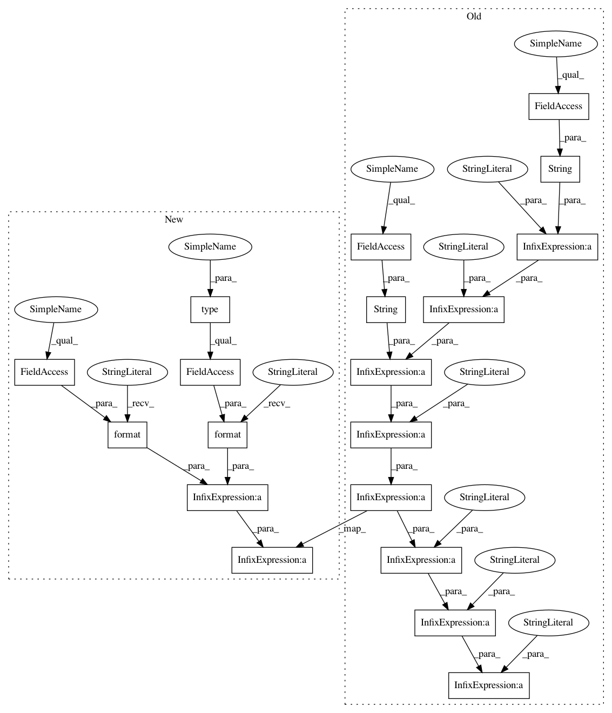

c1c6996866b95b84d89992f04bd2e91e2aa8d3b2,src/skmultiflow/metrics/measure_collection.py,MultiOutputMeasurements,get_info,#MultiOutputMeasurements#,745
Before Change
return self.sample_count
def get_info(self):
return "MultiOutputMeasurements: targets: " + str(self.targets) + \
" - sample_count: " + str(self._sample_count) + \
" - hamming_loss: " + str(self.get_hamming_loss()) + \
" - hamming_score: " + str(self.get_hamming_score()) + \
" - exact_match: " + str(self.get_exact_match()) + \
" - j_index: " + str(self.get_j_index())
def get_class_type(self):
return "collection"
After Change
return self.confusion_matrix._matrix
def get_info(self):
return "{}:".format(type(self).__name__) + \
" - sample_count: {}".format(self.sample_count) + \
" - hamming_loss: {:.4f}".format(self.get_hamming_loss()) + \
" - hamming_score: {:.4f}".format(self.get_hamming_score()) + \
" - exact_match: {:.4f}".format(self.get_exact_match()) + \
In pattern: SUPERPATTERN
Frequency: 3
Non-data size: 19
Instances
Project Name: scikit-multiflow/scikit-multiflow
Commit Name: c1c6996866b95b84d89992f04bd2e91e2aa8d3b2
Time: 2018-08-29
Author: jacob.montiel@gmail.com
File Name: src/skmultiflow/metrics/measure_collection.py
Class Name: MultiOutputMeasurements
Method Name: get_info
Project Name: scikit-multiflow/scikit-multiflow
Commit Name: c1c6996866b95b84d89992f04bd2e91e2aa8d3b2
Time: 2018-08-29
Author: jacob.montiel@gmail.com
File Name: src/skmultiflow/metrics/measure_collection.py
Class Name: WindowMultiOutputMeasurements
Method Name: get_info
Project Name: scikit-multiflow/scikit-multiflow
Commit Name: c1c6996866b95b84d89992f04bd2e91e2aa8d3b2
Time: 2018-08-29
Author: jacob.montiel@gmail.com
File Name: src/skmultiflow/metrics/measure_collection.py
Class Name: WindowClassificationMeasurements
Method Name: get_info
Project Name: scikit-multiflow/scikit-multiflow
Commit Name: c1c6996866b95b84d89992f04bd2e91e2aa8d3b2
Time: 2018-08-29
Author: jacob.montiel@gmail.com
File Name: src/skmultiflow/metrics/measure_collection.py
Class Name: MultiOutputMeasurements
Method Name: get_info